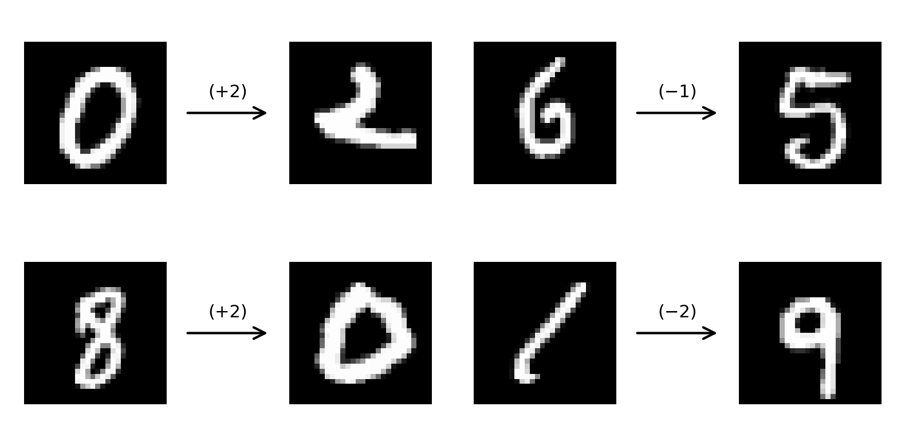
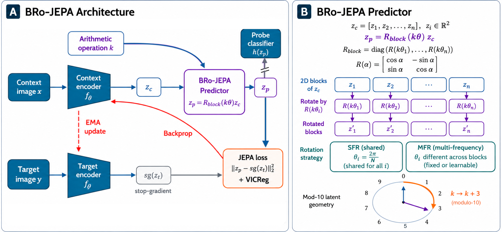
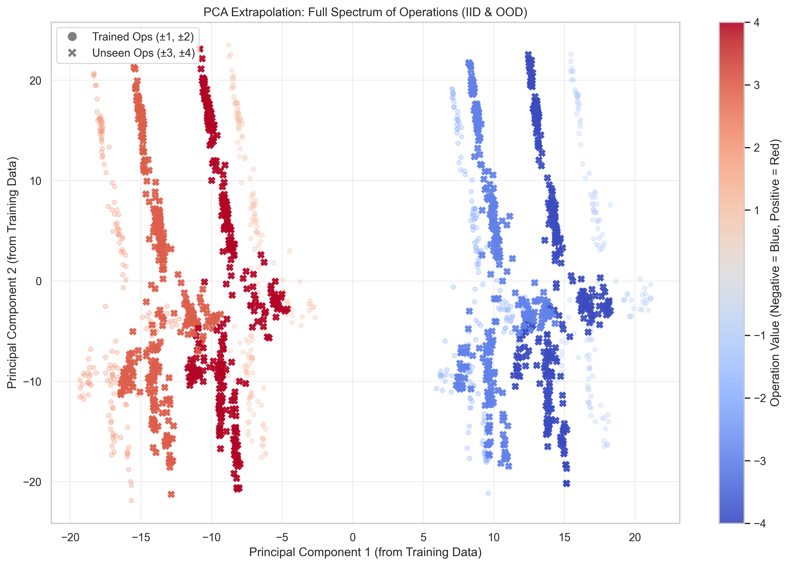
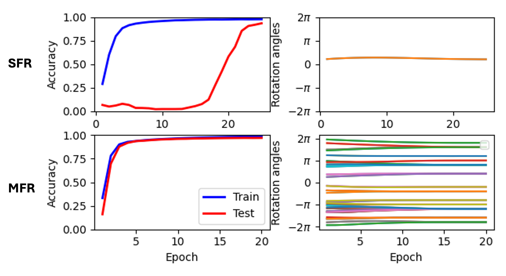
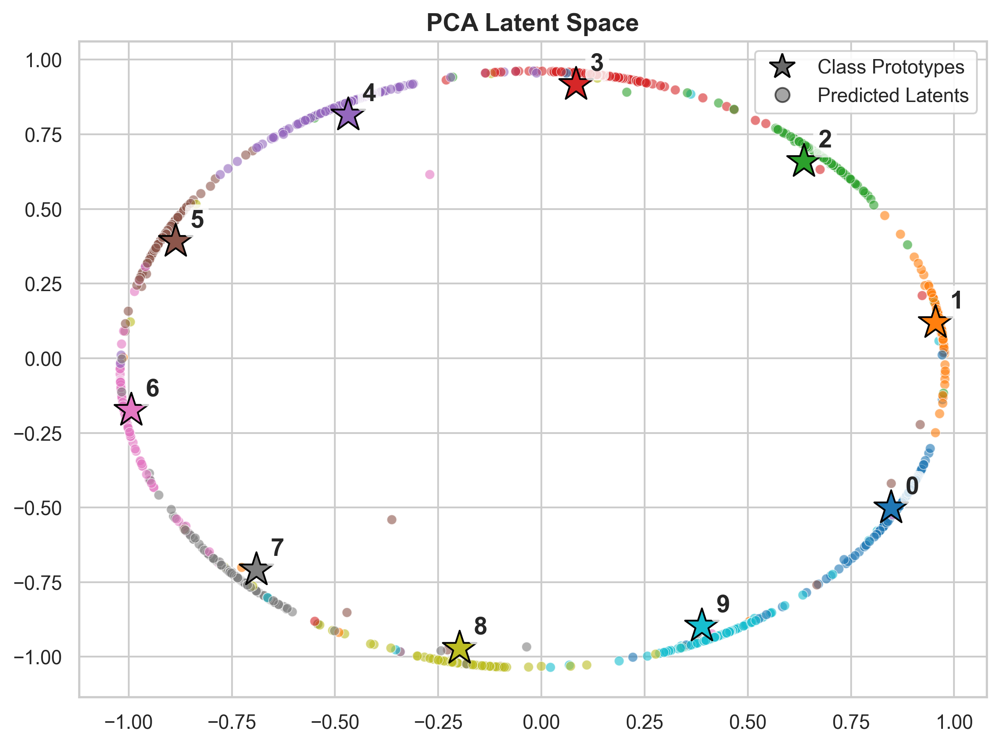
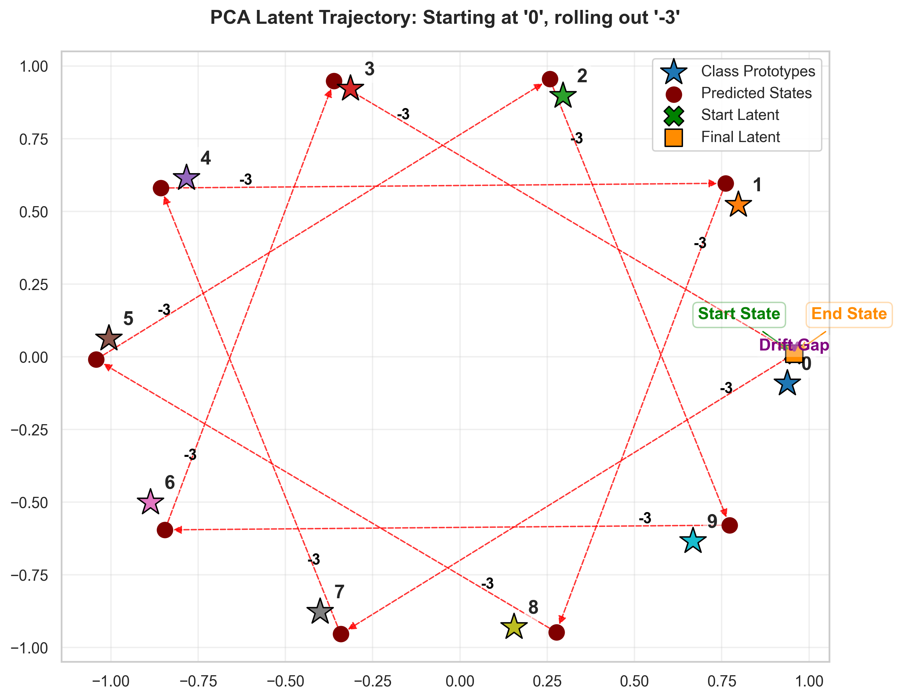

01
The question
Can neural networks learn algebraic rules from images, or only fit the operations shown during training?

02
The core idea
Modular addition is a circle. BRo-JEPA makes the predictor move around that circle in latent space.
Train only primitives
Training operations are {-1,+1}; unseen operations are tested directly.
Rotate latent blocks
The action applies a block rotation instead of a generic operation embedding.
Use the JEPA objective
The visual representation is shaped to be compatible with the structured dynamics.

03
Strict zero-shot results
EMNIST Letters
N = 26, zero-shot %
04
Where baselines break

High seen-operation accuracy is not rule learning.
- Supervised and additive baselines fit seen operations.
- Strict zero-shot remains near chance for additive predictors.
- Rollout can work while direct one-step composition still fails.
05
Learned angles
The period is recovered, not specified.
- Angles start from random initialization.
- The model is not given the exact modulo-10 rotation angle.
- MFR learns multiple harmonic components of pi/5.
- Independent 2D blocks make MFR more robust than a single shared angle.

06
The latent becomes a circle


07
What BRo-JEPA shows
Structured latent dynamics matter
Operation embeddings alone do not guarantee strict zero-shot composition.
The objective matters too
Supervised models with the same rotation operator still trail BRo-JEPA.
MFR scales better
Multiple frequencies preserve strong generalization on MNIST and EMNIST Letters.